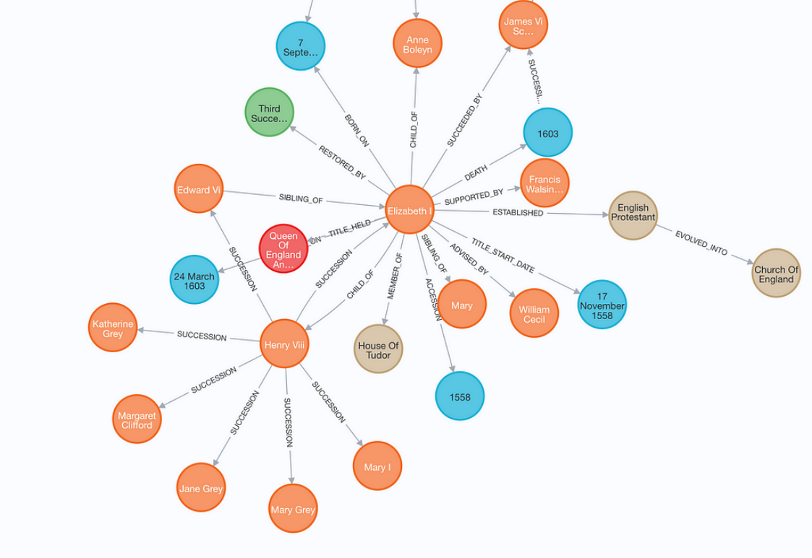
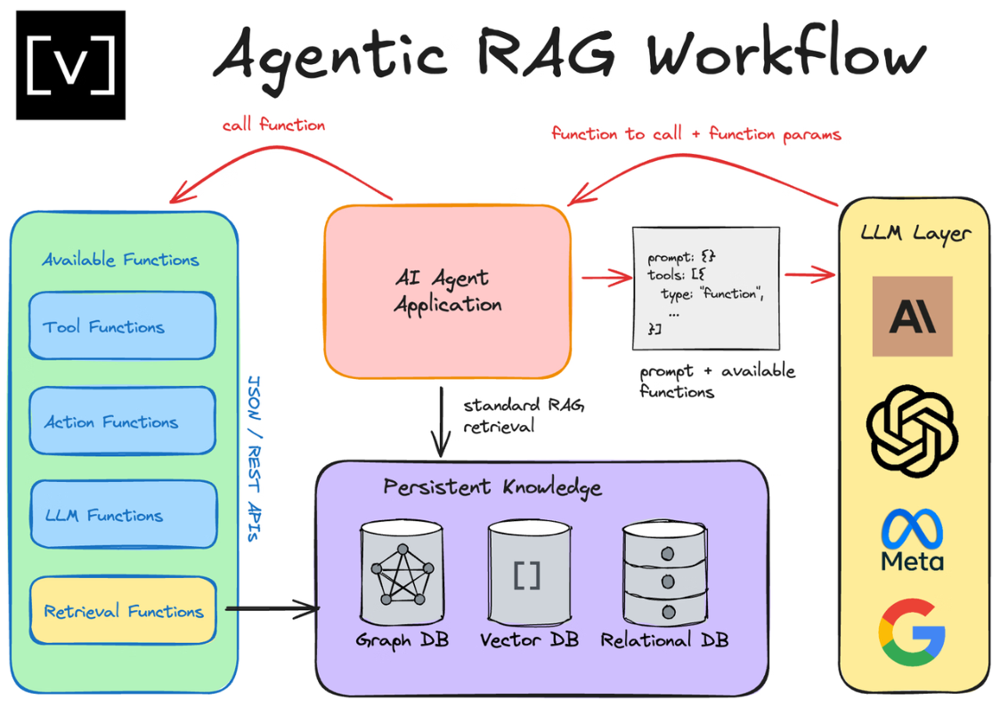
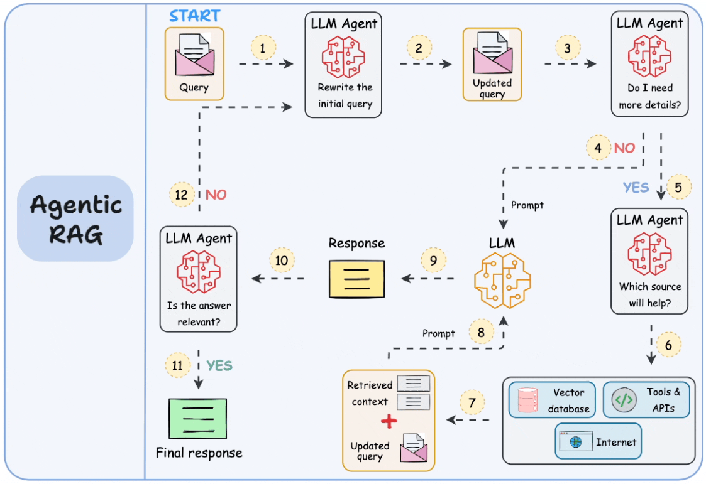

高级 RAG
随着大模型应用不断深入，传统的 RAG 架构已经难以满足复杂业务场景的需求。基础 RAG 主要解决的 是“从知识库中检索相关文档并生成回答”的问题，但在真实系统中，知识来源往往更加复杂，问题 推理过程也更加多样。因此，越来越多的系统开始在 RAG 基础之上构建更高级的检索和推理机制，这 类技术通常被称为 高级 RAG（Advanced RAG）。 高级 RAG 的核心目标，是让系统具备更加复杂的知识组织能力、更灵活的检索策略以及更强的推理能 力。常见的高级 RAG 架构包括 Graph RAG、Agentic RAG 以及 Multi-source RAG。这些技术正在逐 渐成为构建下一代 AI 应用的重要基础。
Graph RAG
Graph RAG 是一种结合 知识图谱（Knowledge Graph） 与 RAG 架构的技术。传统 RAG 通常基于文 本块进行检索，而 Graph RAG 则通过构建实体关系图来组织知识，使系统能够理解更加复杂的知识结 构。

在 Graph RAG 中，系统会首先从文档中抽取关键实体及其关系，例如人物、公司、地点或事件，然后 将这些信息组织为图结构。图中的节点代表实体，边则表示实体之间的关系。例如：
• 公司 ⸺ CEO ⸺ 人物
• 人物 ⸺ 毕业院校 ⸺ 学校
• 公司 ⸺ 成立时间 ⸺ 日期
当用户提出问题时，系统不仅可以检索相关文本，还可以在知识图谱中进行关系推理，从而获得更加 精确的答案。
Graph RAG 的优势在于能够更好地处理 结构化知识和复杂关系推理。例如，在企业数据分析、金融知 识系统以及科研知识库中，很多问题都涉及多个实体之间的关系，如果仅依赖文本检索，很难获得完 整答案。 通过引入知识图谱，Graph RAG 可以构建更加清晰的知识结构，从而提升系统的推理能力和回答准确 率。
Agentic RAG
Agentic RAG 是近年来出现的一种新型架构，它将 AI Agent 与 RAG 系统结合，使模型能够自主规划检 索和推理流程。

在传统 RAG 中，检索流程通常是固定的，例如一次查询对应一次检索，然后直接生成答案。而在 Agentic RAG 中，系统可以根据问题复杂程度动态决定下一步行动，例如：
-
是否需要重新检索
-
是否需要扩展查询
-
是否需要访问其他数据源
-
是否需要进行多步推理
这种机制使得系统不再是简单的检索与生成流水线，而是具备一定的“决策能力”。 例如，当用户提出一个复杂问题时，Agent 可能会执行如下步骤：
-
分析问题并拆解任务
-
根据子问题进行检索
-
对检索结果进行总结
-
如果信息不足，则再次检索
-
最终整合信息生成答案
通过这种方式，Agentic RAG 可以更好地处理复杂任务，例如研究分析、数据调查或多步骤问题解答。
Multi-source RAG
在真实业务环境中，知识通常分散在多个数据源中，例如：
-
企业内部文档
-
数据库系统
-
API 服务
-
外部知识库
-
实时互联网数据
传统 RAG 通常只连接单一知识库，而 Multi-source RAG 则可以同时整合多个数据来源，从而构建更 加全面的知识系统。

-
在 Multi-source RAG 架构中，系统会根据用户问题选择合适的数据源。例如： • 如果问题涉及企业内部政策，则查询内部知识库
-
如果问题涉及实时数据，则调用 API
-
如果问题涉及公共知识，则访问互联网数据
随后，系统会将不同来源的信息进行整合，并输入到大语言模型中生成最终答案。 这种架构能够显著提升系统的信息覆盖范围，使 AI 系统不仅能够访问企业知识，还可以结合外部数据 进行分析。
高级 RAG 的发展趋势
随着 AI 应用规模不断扩大，RAG 系统正在从简单的检索增强架构逐渐发展为更加复杂的智能系统。未 来的 RAG 技术可能会呈现以下几个趋势。
首先，知识组织方式将更加结构化，例如结合知识图谱或数据库，使系统能够理解复杂实体关系。其 次，检索流程将更加动态化，通过 Agent 系统进行任务规划和多步推理。最后，数据来源将更加多样 化，系统可以同时访问多种数据源，从而获得更加全面的信息。
在这种趋势下，RAG 不再只是一个简单的技术模块，而是逐渐演变为 AI 应用系统的核心架构。通过不 断优化检索、推理与知识管理机制，RAG 技术将成为连接大语言模型与真实世界知识的重要桥梁。